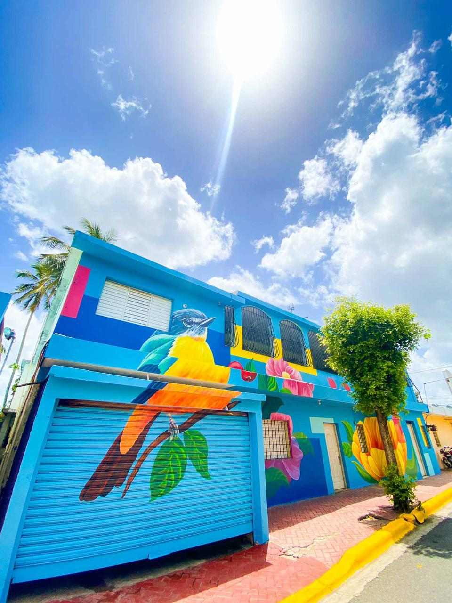

It is one of the 32 provinces of the Dominican Republic. It was created from the division of the province of La Vega on September 10, 1982, and came into effect on January 1, 1983. Its first authorities were elected on May 16, 1986.
It was named after Dr. Monsignor Adolfo Alejandro Nouel, Archbishop of Santo Domingo and President of the Dominican Republic 1912-1913.
